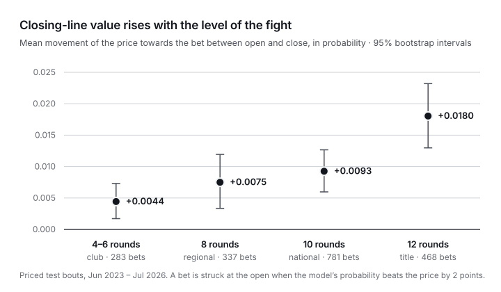

Vertex Boxing
It began from a thesis:
Regional and club boxing lines are soft enough to beat.
I moved the Vertex MMA models to professional boxing to test that claim. On every bout the available odds cover, the lines are not soft. What the model turned out to read is where the line is going.
- bouts, 1950 to July 2026
- 413,279
- priced bouts
- 3,288
- nats, blended into the closing price
- +0.0043
- on the 2026 holdout, against a bar of 20
- e = 41.8
- real bets
- 0
The thesis, and what happened to it
The project began from a claim: the UFC closing line is sharp, but regional and club boxing lines are soft, so that is where a model built on records would find room. The data says the reverse.
Bets were struck at the opening price wherever the model’s probability beat the price’s by 2 points, a threshold fixed before the table was seen. Closing-line value, how far the price then moved towards the bet by the close, rises with the level of the fight.

realised return
- 4 to 6 rounds: −14.9%
- 8 rounds: +5.4%
- 10 rounds: +4.1%
- 12 rounds: +13.1%
The belt on the line gives the same ordering. The model reads records and ratings, and a rating is only as good as the record under it. At world level both fighters have thirty bouts behind them; on a club card the market knows which of the two is being managed, and the model is reading two thin records. The anonymous regional card the claim was aimed at gets no price at all, so there it cannot be tested.
On a window the rule was never chosen on
Refit on data up to June 2021 and run unchanged on the two years after, the pattern held: the top of the market gave 2.0 times the closing-line value of the bottom (+0.0276 against +0.0136), and the two intervals do not overlap.
10 June 2021 to 10 June 2023
The rule copied unedited onto two years it was never chosen on. Lines are 95% intervals. The outlined rod is the lower tier’s value laid twice end to end. Report, section 4.2
The money did not follow. The return was +9.5% with zero inside its interval. At closing prices it was −3.2% with the margin taken out by the power method, the one whose closing price is calibrated, and +2.8% with the proportional method.
What the model knows
On its own the model does not beat the closing line: −0.0211 nats [−0.0322, −0.0100], and −0.0198 when refit yearly. Blended into the closing price at a weight of 0.17 it improves that price by +0.0043 [+0.0024, +0.0062] on 3,288 priced bouts, so it carries information the price does not.
At the closing price that is worth nothing in money: the one result that looked like money there came from stale prices (e = 1.15 on true closing prices) and was withdrawn. At the opening price, a median three days before the fight, it is different. On its own the model forecasts worse than the opening price. Blended in, it moves that price 87% of the way to where it closes.
The opening price, tested by betting
Each window was scored as an e-value, the same machinery as my first paper: a bet against the price that cannot grow in expectation if the price is right. The bar is 20; 2023–2025 was registered as one of four hypotheses tested together, so its bar was 80.
Four windows at the opening price, each scored as an e-value
On a log scale from 1, where every bet starts, to 1,000. Blue marks a window past its bar.
| Window | How it was fixed | Result |
|---|---|---|
| 2016–20202,016 bouts, ProBoxingOdds open | Pre-registered in public: the protocol’s hash was timestamped in Bitcoin blocks 968272 and 968274 and pushed to GitHub before the model was trained. | e = 7.0 × 106passed; +18% to +24% on flat stakes |
| 2021–20231,545 bouts, Bet365 open | The same protocol, declared in advance as already seen. | e = 12.5did not clear the bar |
| 2023–20253,077 bouts, Bet365 open | Pre-registered, but committed locally, so the order rests on my word. | e = 3.9 × 108passed; 1.2 × 108 with everything settled in fight week removed; +10.9% [+6.2%, +15.9%] on flat stakes |
| Jan–Jul 2026541 bouts, Bet365 open | Pre-registered in public: the rule for which bouts to bet was chosen on the three windows above and pushed before the holdout model was trained. | e = 41.8passed |
The obvious refinement, betting only title fights and dropping club fights, lowered the evidence in every past window, so the rule stayed as it was. The 2016–2020 opening line carries no timestamp and no named book, and that market was thinner, so that result is historical.
The leak it caught
Judges’ scorecards are published only for fights that went the distance, so the mere presence of judge fields told the model how a fight had ended, a fact nobody has before the bell. Where judges were recorded, 9.7% of fights ended early; where they were not, 74.3% did.
How a fight ended, read off whether its judges were recorded
A control on 5,673 events confirmed it was the outcome and not the crawler. Report, section 6
Put back into the final model, the leak is worth +0.0038 on held-out bouts and nothing on priced ones. It is gone, and a check now tests every column for it. So are two smaller bugs that made identical runs disagree: re-run seven weeks later, the published scoreboard came back identical to sixteen significant digits.
Checks built to kill the result
The opening-price result survived retraining without anything settled in fight week, a simulated null (mean e 0.20, never reaching its registered bar of 80), price-only controls with no model in them (1.2 and 0.25), and every year on its own. Sixteen classic price biases, among them favourite–longshot, the unbeaten record and the home fighter, were tested at Bet365’s close; none reached 20.
One pattern I had published:
All the value is on favourites.
It came from taking the margin off the open and the close by two different methods. Fixed, it vanished, and the report records the correction.
A random search, with the rules written first
The last thing tried was brute force, under a protocol committed before the first fit. 200 random configurations were trained on bouts up to June 2021 and ranked on 2021–2023, and the top five were scored once on 2023–2026, which the search never saw.
Six of the 200 had beaten the model already in use on the window they were ranked on; none of the five taken forward kept that lead on unseen bouts. The best had led by +0.0017 where it was chosen and trailed by 0.0004 where it was not.
What it does not show
- The model does not beat the market on its own.−0.0211 nats against the close
- It makes nothing at the close.e = 1.15 on true closing prices
- The opening-price result is historical.0 real bets
- The edge was absent in 2021–2023.e = 12.5, short of 20
- A bookmaker limits an account that keeps winning at the open.
The anonymous regional card carries no price, so the thesis was refuted where it can be tested and cannot be tested where it was aimed.
Section 9 of the report has all three tests and every check that could have killed them.
The live test
No real bet has been placed. The weight in the final rule, 0.10, was picked after the 2026 holdout was scored, so only fights that had not happened can test it. On 24 September 2026 the rule was frozen and pushed publicly before any bout it covers had been fought: a model trained to 24 July 2026, blended into Bet365’s opening price, one unit on every side where the blend beats the posted price, scored with no stake placed.
It is an e-value that can be read at any checkpoint, rejects at 20, and closes on 25 September 2029, three years after the freeze. At 60 to 90 bets a year, a true return of +19%, the rule’s 2016–2026 average, would be expected to pass in one to two years, before the close. A true +10% would take three to four, so the test would probably close before it passed. With no edge it would never pass. The result will be reported either way.
When a true return would pass, at 60 to 90 bets a year
From the freeze to the close, with the ranges the protocol gives for a pass. The +10% range begins where the test closes.